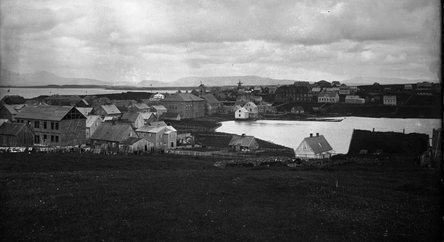

1884
Ljósmynd Sigfúsar Eymundssonar tekin frá Hólavöllum yfir Kvosina árið 1884. Torfbærinn Hólakot sést hægra megin á myndinni. Tímasetja má myndina út frá byggingarári Suðurgötu 8 sem er í byggingu.

Ljósmynd eftir Sigfús Eymundsson1884